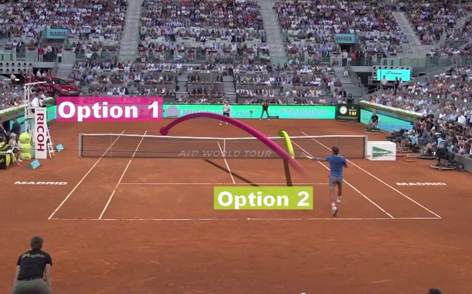

Core Tennis Shots
Tennis becomes much easier to understand when you see each shot as a tool with a specific purpose during a rally.
- The forehand is usually a player's most natural attacking shot because it is hit on the dominant-hand side.
- The backhand covers the opposite side and helps players stay balanced when rallies move away from the forehand wing.
- The serve starts every point, so it is both a technical stroke and a strategic opportunity to control the rally immediately.
- The volley is struck before the ball bounces and is most effective when a player moves forward to shorten the opponent's reaction time.
- The slice stays low and slows the point down, which can disrupt rhythm and force awkward contact.
- The drop shot lands softly near the net and works best when an opponent is positioned deep behind the baseline.
- The lob sends the ball high over an opponent and is especially useful when defending against a net approach.
In addition to stroke technique, there are important match strategies and court patterns that help players decide when to attack, defend, or change pace.

Good strategy links shots together into a plan. A player who understands spacing, timing, and opponent tendencies can win more points even without hitting the hardest ball on the court.